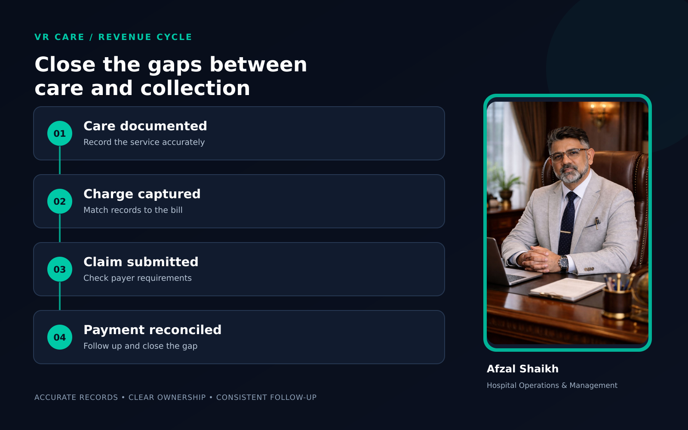
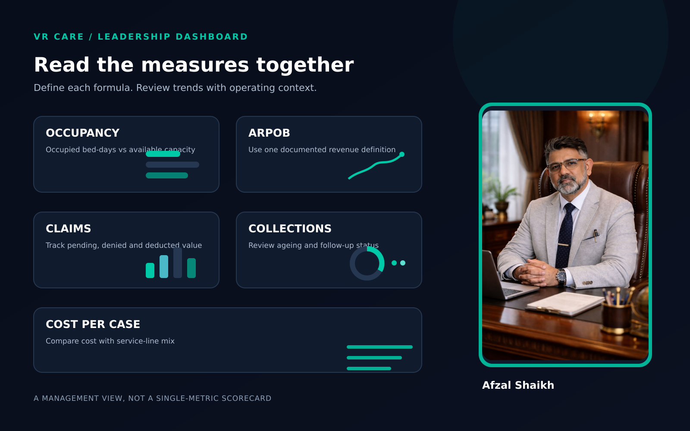

How Hospitals Can Improve Profitability by Finding Revenue Leakage

Hospital profitability improves when the hospital captures the revenue it has legitimately earned, controls avoidable costs and uses its beds, staff, operating theatres and diagnostic services effectively. The first step is to find where expected revenue is lost between care delivery, billing, claims, collections and financial reporting.
Hospital profitability improves when the hospital captures the revenue it has legitimately earned, controls avoidable costs, and uses its beds, staff, operating theatres and diagnostic services effectively. The first step is to find where expected revenue is lost between care delivery, billing, claims, collections and financial reporting.
A hospital can be busy and still struggle financially. Patient volumes may be rising while deductions, delayed claims, unbilled services, discounts or underused capacity quietly reduce the money available to run the hospital.
Improving profitability does not mean increasing every bill or cutting essential clinical resources. It means building clear, ethical systems so that services delivered are accurately documented, correctly billed, collected and monitored.
What is hospital revenue leakage?
Hospital revenue leakage is the loss of legitimate revenue because a service, charge, claim or collection is missed, delayed, incorrectly recorded or not followed up.
It can happen across the patient journey: from registration and admission through treatment, billing, discharge, insurance processing and final collection. VR Care's hospital operational and management audit also identifies billing, pharmacy, procedures, TPA processes and resource utilisation as areas where operational gaps can affect financial performance.

Revenue leakage is not the same as a clinical decision to provide or withhold care. Hospitals should never encourage unnecessary services, inaccurate coding or pressure on clinicians to increase billing. The goal is accurate capture and transparent collection for care that was appropriate and actually provided.
Common sources of revenue leakage in hospitals
1. Services delivered but not captured in the bill
A procedure, consumable, diagnostic test or other service may be recorded in a clinical or departmental record but not transferred correctly into billing. This can happen when the workflow depends on manual slips, delayed entries or unclear responsibility between departments.
The remedy is a reconciled process between the clinical record, service record and final bill. Any charge should be supported by documentation and hospital policy.
2. Packages and charge masters that are not maintained
A package may not clearly state what is included, what is excluded, and how exceptions are handled. If tariff masters are outdated or staff apply them inconsistently, the hospital may underbill, overbill or face avoidable disputes.
Review packages and charge masters with clinical, finance and operations teams. Make updates controlled, approved and communicated.
3. Pharmacy and consumable discrepancies
Differences can appear between items issued, items used, items returned and items charged. Expiry, wastage, unrecorded returns, unauthorised discounts and unclear stock responsibility can also affect margins.
A regular reconciliation should compare pharmacy or stores issues with patient-level records, returns and billing, while respecting clinical documentation and patient-safety requirements.
4. TPA and insurance claim delays or deductions
Missing documents, incomplete pre-authorisation, coding or package mismatches, and late follow-up can delay claims or lead to deductions.
Track claims by payer, age, value and status. Review denial reasons to identify patterns, then fix the source process. Do not treat every deduction as a billing error or every denied claim as recoverable; assess each case against the payer contract and record.
5. Discounts, waivers and credit notes without clear controls
Discounts can be appropriate, but unclear approval limits make it hard to understand their financial impact. A hospital should record who approved the adjustment, why it was made, which service line it affected and whether the patient or payer was informed correctly.
6. Capacity that is available but not productively used
A hospital may have beds, operating theatres, ICU capacity or diagnostic equipment that are available but underused. Low utilisation can raise the cost per patient even when the hospital's fixed costs remain largely unchanged.
Review demand, scheduling, staffing, downtime, referral pathways and patient flow together. Increasing occupancy alone is not enough if the hospital cannot deliver safe, timely care.
7. Outstanding receivables and incomplete follow-up
Revenue recorded in the accounts is not always cash collected. Hospitals should review outstanding patient, corporate, insurer and TPA balances, using ageing categories and assigned follow-up responsibility.
Separate disputes, documentation gaps, payer delays and uncollectible balances. This makes the next action clearer than looking only at a total receivables figure.
How to measure hospital profitability without confusing the metrics
Revenue, ARPOB and EBITDA describe different things.
- Revenue shows the amount earned under the hospital's accounting and reporting rules.
- ARPOB, or average revenue per occupied bed, indicates revenue relative to occupied bed-days for a defined period.
- EBITDA is an operating-profit measure before interest, taxes, depreciation and amortisation. Its calculation and reporting basis should be consistent with the hospital's finance policy.
- Profitability depends on both revenue realisation and the costs associated with delivering services.
A basic daily ARPOB calculation is:
For example, if a hospital records ₹30 lakh of eligible inpatient revenue over 600 occupied bed-days, the ARPOB for that period is ₹5,000 per occupied bed-day. This is only an illustrative calculation, not a benchmark.
The numerator must be clearly defined. Public filings show that hospital groups may use different revenue inclusions — for example, some calculations exclude pharmacy or other income. That makes it important to document the hospital's own method and avoid direct peer comparisons unless the definitions match.
ARPOB should also be read alongside occupancy, payer mix, service mix, length of stay, collection performance and cost per case. ICRA's hospital-sector analysis discusses occupancy and ARPOB together when describing revenue trends, which reinforces the value of reading them as a set rather than relying on a single number.
A practical way to reduce revenue leakage
Step 1: Map the revenue cycle
Follow a sample of patient accounts from registration to final collection. Include cash, insurance, TPA and corporate cases. Mark where information, approvals, charges or documents move between departments.
Step 2: Reconcile the records
Compare clinical documentation, procedure and diagnostic records, pharmacy or stores issues, billing entries, claims, remittances and bank receipts. Investigate gaps rather than assuming their cause.
Step 3: Quantify the issue
Estimate the value and frequency of each gap. Separate one-time errors from recurring process failures. Review results by department, payer and service line where the data supports it.
Step 4: Assign an owner and correction
Each recurring issue needs a named process owner, a corrective action, a due date and a measure of completion. Training alone may not solve a system problem if the workflow or software still permits the same error.
Step 5: Monitor a focused dashboard
Hospital leaders can start with a small set of measures:
- Occupancy and occupied bed-days
- ARPOB, with the formula documented
- Net revenue by payer and service line
- Billing adjustments, discounts and credit notes
- Claims pending, denied and deducted by value and age
- Receivables ageing and collections
- Pharmacy and consumable reconciliation exceptions
- Operating theatre and diagnostic utilisation
- EBITDA or operating margin using a consistent finance definition

The dashboard should help managers ask better questions. It should not replace a review of patient safety, service quality or the reasons behind a variance.
What hospital owners and leaders should avoid
Do not use ARPOB as a staff sales target or compare hospitals with different specialties, payer mix, service scope or revenue definitions as if they were equivalent.
Do not improve a margin report by delaying necessary spending, weakening safe staffing or discouraging appropriate care. Instead, look for avoidable rework, preventable denials, unplanned downtime, inefficient purchasing and process gaps that the hospital can correct responsibly.
For trustees, public-sector, PSU and institutional leaders, financial controls should also support transparency and accountable use of resources. A clear audit trail helps leaders understand how funds are earned, adjusted and collected.
The key takeaway
A hospital improves profitability by understanding where revenue is earned, where it is lost, what it costs to deliver care, and whether the resulting cash is collected. Start with a structured review of the full revenue cycle, then fix the repeatable process gaps and monitor the results.
If your hospital needs a structured review, explore VR Care's hospital turnaround and profitability improvement service, its hospital operations and management service, or contact VR Care to discuss an assessment.
Frequently asked questions
How can a hospital improve profitability?
A hospital can improve profitability by capturing legitimate revenue accurately, reducing preventable claim deductions and delays, managing costs responsibly, improving capacity use and monitoring cash collection alongside revenue.
What causes revenue leakage in a hospital?
Common causes include missed or inaccurate charges, outdated tariffs, pharmacy and consumable discrepancies, incomplete claims, uncontrolled adjustments, underused capacity and weak receivables follow-up.
How do you calculate ARPOB?
Divide the eligible hospital revenue for a defined period by occupied bed-days for the same period. Define which revenue categories are included and use the same method consistently.
Does a higher ARPOB always mean higher profit?
No. ARPOB measures revenue per occupied bed-day, not profit. Costs, payer mix, occupancy, specialty mix, length of stay, claim deductions and the revenue definition all affect the final result.
Is hospital revenue the same as hospital profit?
No. Revenue is the amount earned under the hospital's reporting rules. Profitability also depends on operating costs and the accounting basis used to calculate measures such as EBITDA.
Further reading
- VR Care: Hospital Turnaround & Profitability
- VR Care: Hospital Operational & Management Audit
- VR Care: Hospital Operations & Management
- ICRA: Hospital-sector research on occupancy and ARPOB trends